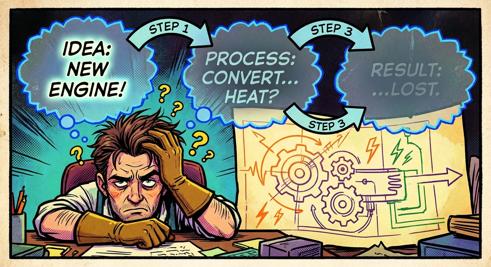

The Translation Challenge
#1
Narrator: Meet Alex, a language enthusiast trying to translate "The cat sat on the mat" to French using old methods.

Prompt: Comic book panel showing a frustrated character with thought bubbles containing fading words, arrows showing sequential processing left to right, information getting dimmer with each step, vibrant comic book art style
The Old Way (RNNs): Sequential processing - one word at a time
The Problem: "Cat" processed → "sat" processed → "on" processed... By the time we reach "mat", the network has forgotten important context about "cat"
Memory Loss Visualization: Fading colors showing information degradation
Chapter 1